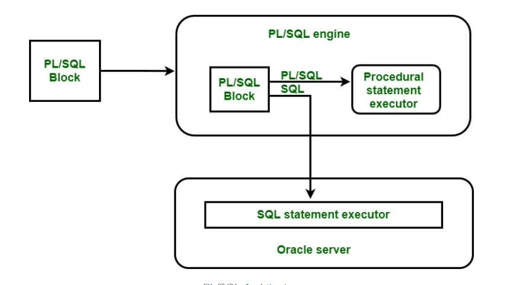

The PL/SQL runtime system is a technology and not an independent product. This technology is actually like an engine that exhibits PL/SQL blocks, subprograms like functions and procedures. This engine can be installed in an Oracle Server or in application development tools such as Oracle Form Builder, Oracle Reports Builder etc.

PL/SQL can reside in two environments –
1. The Oracle Server
2. The Oracle tools
These two environments are independent of each other. In either environment, the PL/SQL engine accepts any valid PL/SQL block as input. The PL/SQL engine executes the procedural part of the statements and sends the SQL statement executer in the Oracle Server. A single transfer is required to send the block from the application to the Oracle Server, thus improving performance, especially in a Client-Server network. PL/SQL code can also be stored in the Oracle server as subprograms that can be referenced by any number of applications connected to the database.